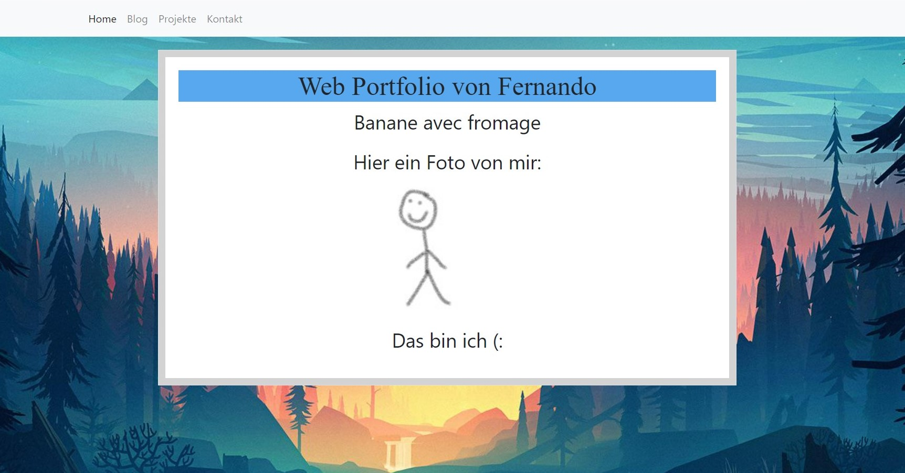

Zweiter Eintrag
02.06.2022
Zwischenblog
Dies ist ein Zwischeneintrag im Blog.
Was habe ich bis jetzt gelernt?
In den letzten zwei Wochen habe ich viel an meinem Portfolio gearbeitet und es wird Zeit das Update zu veröffentlichen, daher mache ich noche einen Zwischenblog bevor ich dann definitiv alles uploade.
Screenshots
Links zu inspirierenden Seiten
Eine sehr eindrucksvolle und inspirierende Webseite, welche ich beim erkunden von Webseiten gefunden habe. Diese Webseite zeigt wie viel mit den verfügbaren Tools für Webdesign eigentlich möglich ist und, dass ich noch sehr viel zu lernen habe.
Auch hier eine sehr inspirierende Webseite welche viel mit Animationen und Farben arbeitet. Was mir hier sehr gefallen hat ist wie mit dem Programmierartigen Titeln und Buttons gearbeitet wurde, mein Ziel ist es irgendwann auch so etwas hinzukriegen.
Welche Probleme sind mir beim Arbeiten begegnet?-
Ich hatte teils Probleme um die Knöpfe bei Projekte beim hovern richtig zu verändern, sodass ich dann die gewünschte farbe hinbekomme.
-
Ich hatte Probleme um beim "Zurück zum Anfang" Knopf die funktion einzufügen, welche mir hilft genau das zu tun wofür er gemacht ist.
-
Ich wollte mit Photoshop noch ein besseres Hintergrundbild machen, jedoch besitze ich die nötigen fähigkeiten dazu noch nicht.
-
Ich hatte die ganze Zeit in der falschen Funktion gearbeitet und statt dem Text habe ich immer den Knopf selber modifiziert. Nachdem ich das gemerkt hatte, funktionierte alles gut, schlussendlich habe ich dann gemacht, dass der Kontrast beim hovern besser wird.
-
Dank einem Artikel auf w3schools habe ich mit hilfe von Javascript einen Knopf machen können der sogar verschwindet, wenn man ganz oben ist. Der knopf der dort gezeigt wurde gefiel mir jedoch nicht und ich entschied mich für einen eigenen mit Text.
-
Ich habe mich am schluss mit einem simpleren Design zufrieden gegeben, welcher für jetzt genug ist. Ausserdem habe ich angefangen ein wenig mehr mit Photoshop zu experimentieren um dann in naher zukunft meinen gewünschten Hintergrund zu machen.
Ich will eine zusätzliche Seite mit experimentellen Projekten erstellen und in meinen Privatprojekten meine Abschlussarbeit der Sekundarschule hinzufügen.